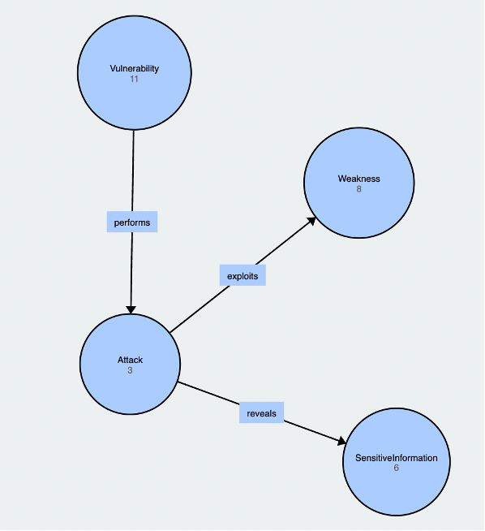

The TrueCrypt suite was one of the well-known disk encryption tools in the PC world, but it was discounted in 2014. Andreas J. and Nicolas G. (2014) reviewed the bootloader and the Windows kernel driver source code and discovered a branch of security vulnerabilities from the TrueCrypt suites. In addition, the analysis report also revealed the TrueCrypt source code had a bad code quality and standard, which was too hard to maintain.
From the analysis report, the most severe attack is the problem of using the weak derivation algorithm to encrypt the volume header. It used the PBKDF2 algorithm to encrypt the TrueCrypt header, and developers declared a few iteration counts during the encryption process. As a result, the attacker can exploit this weakness to acquire the encrypted TrueCrypt volume and extract data from it.
Below Ontology figures show the weakness and severity of those identified vulnerabilities.
Would you be prepared to recommend TrueCrypt to a friend as a secure storage environment? What caveats (if any) would you add?
If I get a chance to recommend it to my friend someday, I will add a caveat: "All your data will be exposed eventually and should consider alternative option instead" message for them. Moreover, as we can see, there are many ways to decrypt and acquire data without authorized access from Pranshu B. (2015)’s post. Consequently, TrueCrypt is not a secure data encryption tool for protecting your data. It has chances of data exposure and we should not use it anymore.